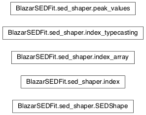

Moudule: sed_shaper¶
This module contains all the classes necessary to estimate the phenomenlogical characterization of the SED, such as spectral indices, peack frequenicies and fluxes
Classes and Inheritance Structure¶

Module API¶
-
class
BlazarSEDFit.sed_shaper.SEDShape(SEDdata)[source]¶ Bases:
objectThis handle the SED shaping process
-
do_sync_fit(fit_model, fit_range=None, check_disk=False, check_BBB=False, check_host=False, use_log_par=False, Ep_start=None, no_check=False)[source]¶
-
eval_indices()[source]¶ This methods evaluates the indices for the SED indices are istances of the index_array () class
-
find_class(E_S)[source]¶ method to evaluate obj class ‘L/I/HPS’ according to Ep
args: E_S
the obj_class member is updated
obj_class==None means undefined class
-
sync_fit(check_host_gal_template=False, check_BBB_template=False, check_disk=False, fit_range=None, nu_min=None, nu_max=None, Ep_start=None)[source]¶ This method analyses the synchrotron shape by means of log-log polynomial fits
The following paremeters are estimated:
- the SED peak frequency Ep
- the SED peak flux Sp
- the curvature at the peak
- checks for the host galaxy
-) first a log-log cubic fit is performed, with the ‘blind’ interval
-) the SED class ‘I/L/HPS’ is set according to Ep, by find_class
- -) the fit range is changed from ‘blind’, according to the
- value returned by find_class, using the function sync_fit_range
-) the SED nu, and nuFnu are generated for the ‘blind’ fit
- -) if the option is selected in the call of the method
- the estimate of the host galaxy is performed
-) a second run improve the obj class is performed
values are stored in the class :class: ‘peak_values’
-
-
BlazarSEDFit.sed_shaper.find_E0(b, a, Ep)[source]¶ returns the value of E0 for a log_par+pl distribution
- Args:
- b: curvature a: spectral index in the PL branch Ep: peak value
Returns:
-
class
BlazarSEDFit.sed_shaper.index(name=None, data_type=None, val=None, err=None, idx_range=[])[source]¶ Bases:
objectClass for the spectral indices
-
class
BlazarSEDFit.sed_shaper.index_array[source]¶ Bases:
objectClass to handle an array of
indexobjects
-
class
BlazarSEDFit.sed_shaper.index_typecasting(data_type, val, error=False)[source]¶ Bases:
objectClass to handle different types of spectral indices